Verifikasi Dokumen Digital¶
Anda dapat melakukan verifikasi keaslian sebuah dokumen digital dengan beberapa cara. Berikut penjelasannya:
1. Adobe Reader¶
File digital yang telah anda terima dapat di verifikasi keaslian dokumen dan validitas tanda tangan digital dengan Adobe Reader.
Buka file yang anda dapatkan dengan adobe reader. Apabila anda kesulitan, untuk memastikan anda membuka file dengan adobe reader lakukan langkah berikut.
Pada bagian atas file yang telah dibuka, anda akan otomaris melihat signature panel.
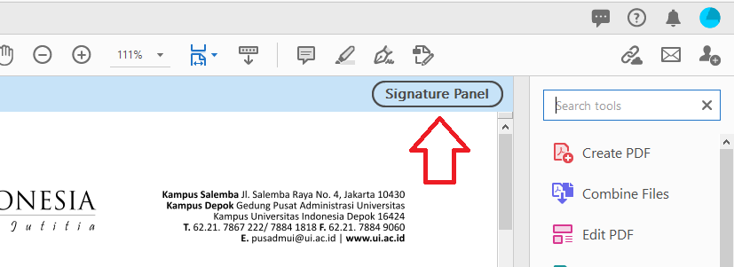Apabila anda klik bagian pada gambar seperti dibawah sesuai urutan. Maka anda dapat melihat profil penandatangan.
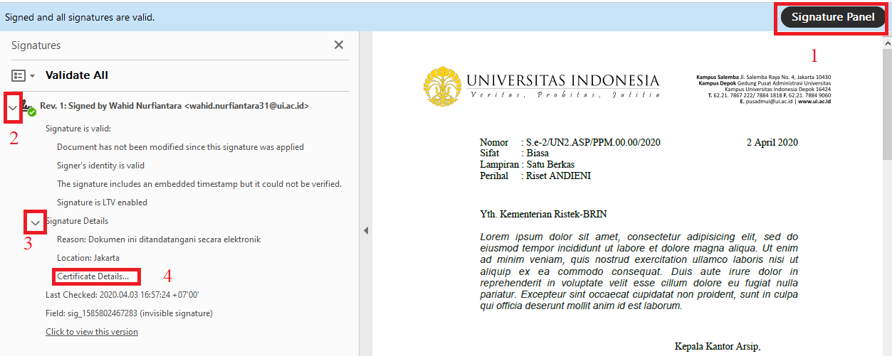 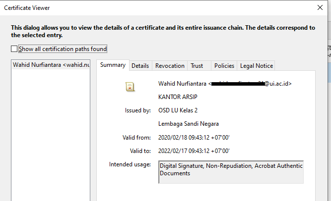Lebih detail tentang penandatangan maka klik Details -> Subject
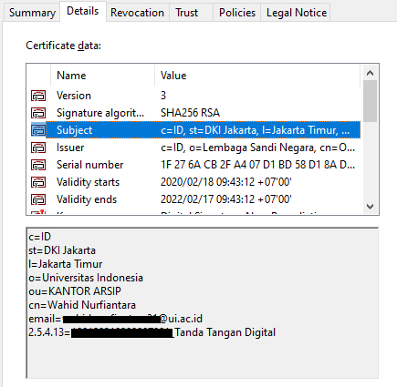1.A. Trust Certificate¶
Pada saat pertama kali menampilkan tanda tangan digital, akan didapatkan tanda checklist pada bagian Signature Panel tidak berwarna hijau, melainkan kuning dengan notifikasi seperti berikut
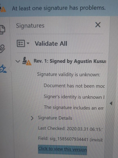Catatan
hal ini terjadi karena komputer anda belum mengenal certificate dari pemilik tanda tangan
Untuk trus dokumen anda pada bagian certificate viewer pilih tab trust dan klik Add to Trusted Certificate kemudian klik OK dan OK.
Catatan
setalah add to trust certificate, anda perlu untuk tutup Adobe Acrobat anda dan buka kembali file yang anda tuju. Maka checklist signature akan menjadi berwarna hijau.
1.B. Invalid Signature¶
Apabila sebuah dokumen telah dilakukan modifikasi, maka signature panel akan menunjukan checklist berwarna merah. Hal ini yang perlu anda pastikan, artinya dokumen yang anda terima sudah tidak asli (palsu).
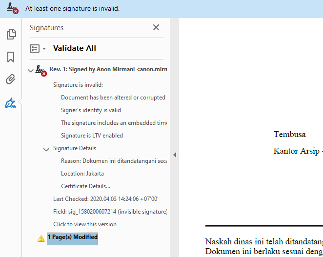Untuk mengecek dokumen asli maka anda dapat klik bagian click to view this version
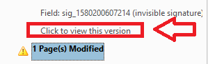 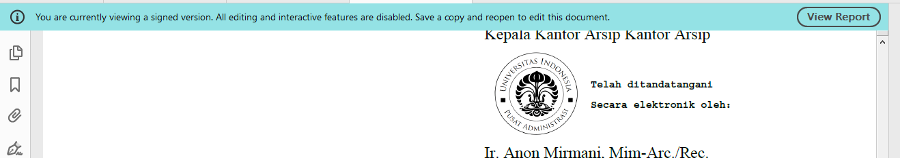maka dapat dilihat telah terjadi perubahan pada kata Tembusan: -> Tembusa
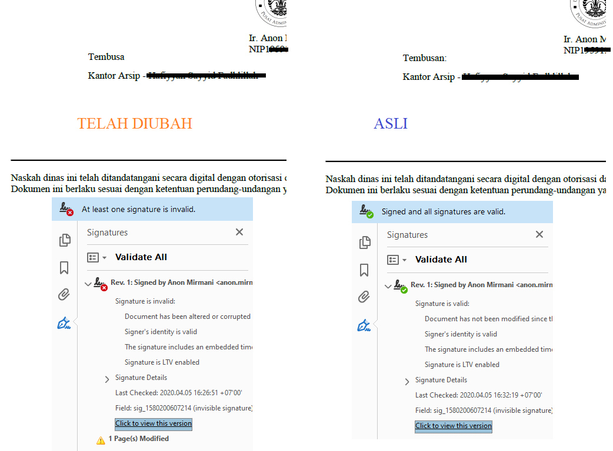2. Very DS - Android Apps¶
Anda dapat melakukan pengecekan dengan aplikasi Android Very DS
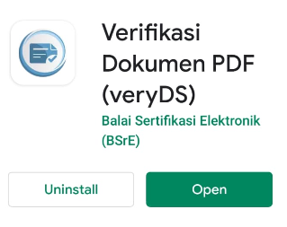Buka file yang anda terima dari android anda, pilih Very DS sebagai pembuka file.
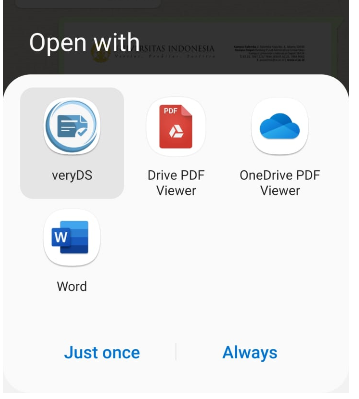Jika file yang anda terima telah ditanda tangani secara elektronik dan masih autentik
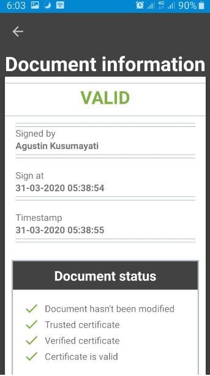Jika file yang anda terima telah ditanda tangani secara elektronik namun telah diubah oleh seseorang.
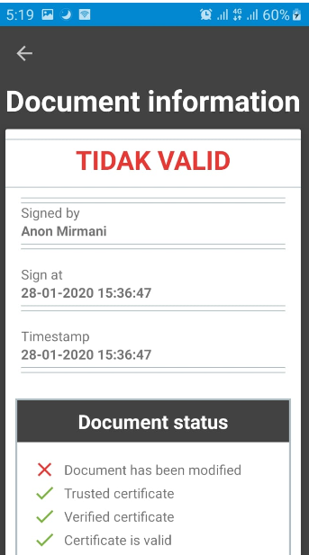Lalu bagaimana dengan file yang tidak memiliki tanda tangan digital, maka Very DS hanya akan berfungsi sebagai PDF Viewer saja.
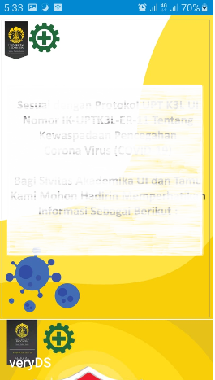3. Portal BSRE (tidak direkomendasikan)¶
Laman dapat diakses pada https://bsre.bssn.go.id/public/verification
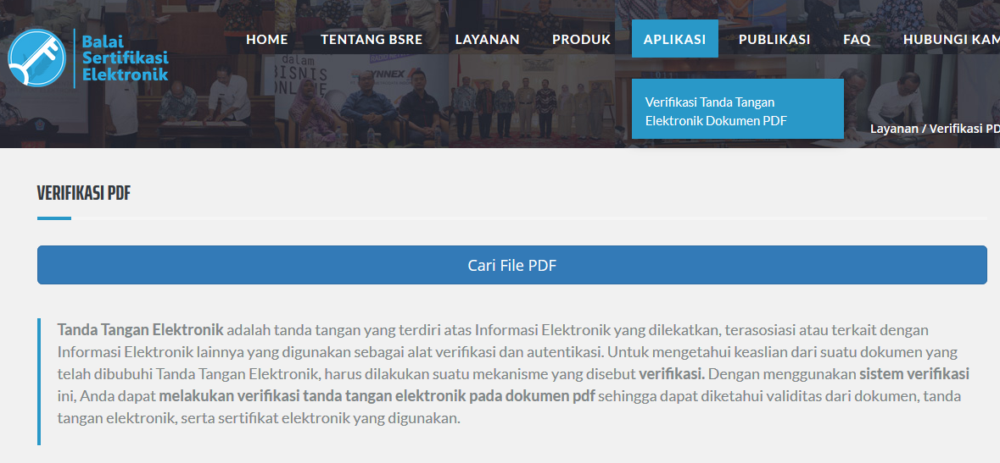Jika file yang diverifikasi memiliki tanda tangan digital yang diterbitkan oleh BSRE
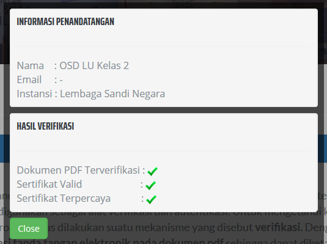Jika file yang diverifikasi tidak memiliki tanda tangan digital
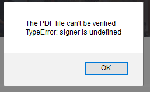Peringatan
verifikasi dengan portal BSRE tidak disarankan, karena saat ini tidak mendukung untuk pengecekan autentikasi dokumen